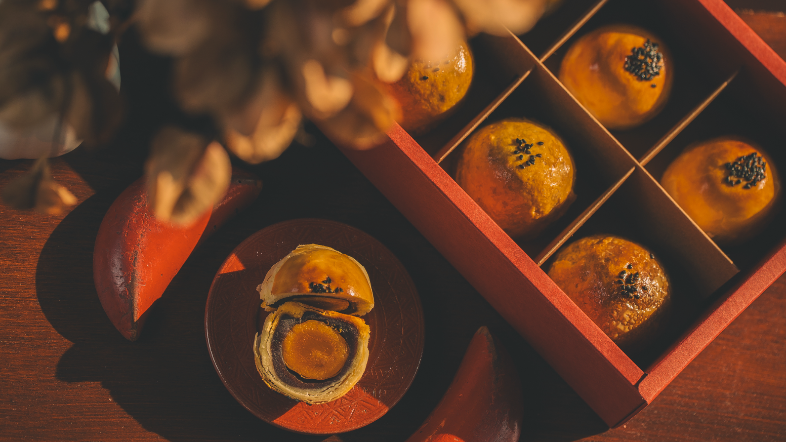
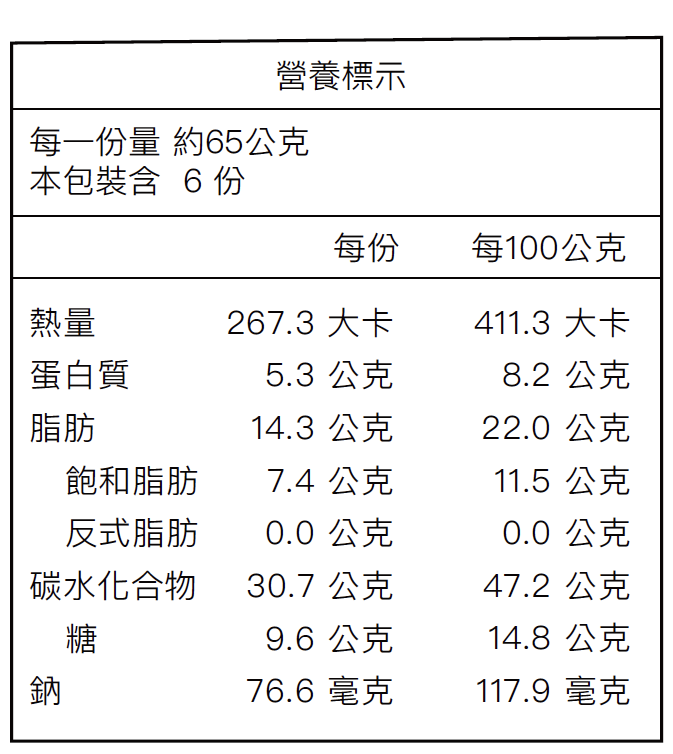
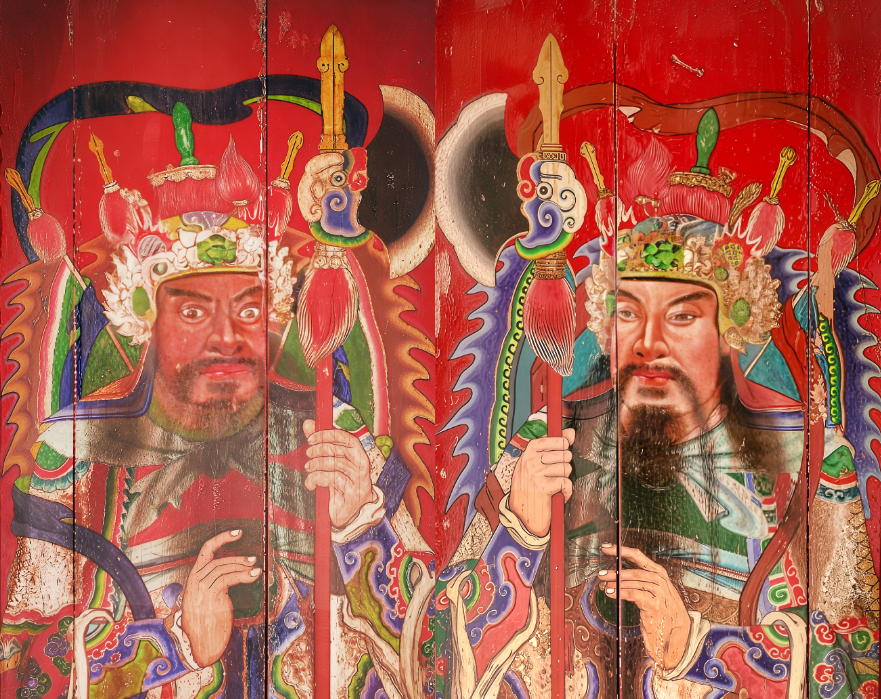

焙茶酥皮層層疊疊，烤成金黃微酥還帶著茶色，入口先是淡雅茶香，再之來是不甜不膩的烏豆沙，溫潤綿密。
中間一顆鹹蛋黃，飽滿渾圓，鹹香醇厚，像是中秋記憶中最熟悉的味道。
咬開那一瞬，黑糖麻糬柔軟，甜香與鹹香交織，又油又香，畫龍點睛般把整體味覺推向高峰。
反覆咀嚼，茶香、蛋香、黑糖香在口中回旋，一口接一口，細細品嚐之間，根本停不下來。
就像守護家廟的神荼鬱壘，沉靜卻帶來安心感，這份中秋的滋味，不只是節慶裡的一份點心，更是記住團聚與回憶的食物。

✦ 一盒六顆蛋黃酥
✦ 成分：烏豆沙餡、低筋麵粉、鹹蛋黃、無水奶油、黑糖麻糬、高筋麵粉、黑芝麻、糖粉、焙茶粉、鹽
✦淨重：約65公克
保存方式與注意事項
✦ 常溫保存，未拆封賞味期12日
✦ 保存期限內含生產及配送天數，有效期限依外盒標示為主。
✦ 避免放置潮濕高溫或曝曬之場所。
✦ 本產品含有麩質穀物（麵粉）、蛋、奶製品。
✦ 拆封後，冷藏保存
運送說明
✦ 離島地區運送請另聯繫。
✦ 常溫商品宅配運費規則請參閱【宅配運費方案】。
自取須知
✦取貨地點
陳德聚堂 / 台南市中西區永福路二段152巷20號
✦取貨日期與時間
9/25～10/5 週四～週日（陳德聚堂開放時間）/ 11-18點
其他
✦如遇不可抗力因素影響，如：年節、中秋、購物節貨量較大、交通意外、颱風地震等天候因素等，貨運配送時間將有延遲。
✦商品到貨後，請先檢查外包裝是否破損，或品項與訂單不符，請盡速與我們聯繫 。
✦原產地：臺灣
募資的啟動，營收作為陳德聚堂修繕基金
古蹟建築，當今被以珍貴的文化資產重視，它們不只是斑駁的牆瓦與深厚的木樑，更是見證歷史變遷與時代生活過的痕跡。是人們生活與記憶的容器。
陳德聚堂從古樸的古蹟空間轉身迎向「在傳承中創新」的文化實驗場域。以工藝結合公益，使陳德聚堂與時俱進、華麗轉身。在這九年間（截至2024年），我們共舉辦了超過150場不同領域的活動，顯著提高了陳德聚堂的能見度與場所認同。
1997年全面性整修至今，陳德聚堂已經經歷過28個年頭，經歷大大小小風災、地震，雖仍屹立不搖，但在樑柱蟲蛀、壁畫逐年剝落、屋瓦墜落風險、漏水與植生等大小問題已不斷出現。
為此陳德聚堂必須再次進行全面性修繕，讓這座400年古蹟宅邸能在臺南中西區重要位置繼續留存，不僅僅是建物本身文化重要性，更多的是見證了東寧王朝、日治、光復到現代，這一代又一代人的回憶。
然而，與臺灣許多重要古蹟相同，陳德聚堂如今面臨著修繕的經費籌措的議題。保存古蹟，不僅需要專業與心力，更需要社會大眾的支持。為了能讓這片文化空間持續守護族群記憶、成為人才培育與文化傳承的基地，誠摯地號召您我共同啟動這場修繕基金籌措的行動。
無論是透過訂購月餅或是單純慷慨賜助，都是對歷史與文化最溫柔的守護；每一份心意，都是文化得以延續的力量。
✨ 誠摯邀請您共同響應「陳德聚堂修繕募款第一波：府城柑哉 - 乙巳年中秋月餅募資傳送」
製作｜陳德聚堂-府城柑哉、誠美社會企業、卷月食研
特別感謝｜臺南市文化資產管理處、臺南藝術大學

【陳德聚堂與它的靈魂⼈物】
南明永曆十五年間（西元1661-1664年）， 44歲的陳澤以「宣毅前鎮」跟隨明鄭軍隊渡海來臺， 並揣家帶眷， 率領族群在臺發展， 建宅於當時的下大埕(大約位於西門路與忠義路之間)一帶。
其後， 陳澤轉戰沙場， 跟隨鄭經反清復明，不幸病逝於廈門。 陳澤官拜統領光祿大夫， 兼管護營左右先鋒， 經歷鄭成功丶鄭經兩代的重要武將，人們多尊稱為「統領公」，故將他所建的宅 第稱為「统領府」。
陳德聚堂即建於此時，是一座承接荷治時期開展東寧王國時期，歷經清國、日治直至現今，橫跨近400年歷 史的臺南市定古蹟。
陳德聚堂靈魂人物「陳澤」作為東寧王國時期的統領，常與作為東寧王國的總制「陳永華」混淆，然而一 人為武一人為文，皆為鄭氏東寧王國的兩大支柱。
陳德聚堂族譜雖無明確記載曾作為居住用的統領府於何時改為宗祠，僅有「臺灣歸清後，改建宗祠」等簡短敘述，但從現存最 早正廳之「翰華生藻」匾落款可知，為九世孫陳焜中試貢生後，與其他四房於康熙32年(1693)二月重修統領府時，陳家後人便將 府邸改建為宗祠，取名「德聚堂」。
民國74年11月27日內政部指定為三級古蹟。
【伴隨臺灣走過歷史歲月的場域】
陳德聚堂在將近400年的歷史洪流中伴隨臺灣社會變遷，從官邸到家廟再轉變為宗祠，一度被強佔為日人軍隊房舍, 經族親力爭回歸後，又遇到時代考驗，短暫時間成為民居、電影院與補習班; 最後在族親的努力下終於恢復陳德聚堂的輝煌身段，成為臺南市定古蹟「陳姓大宗祠德聚堂」簡稱「陳・德聚堂」。

陳德聚堂門神彩繪由畫師 陳玉峰 於 1961 年修建時創作，後因病逝，其作品成為他彩繪生涯晚期的代表作之一。
此幅1961年陳玉峰的門神在1980年代因特殊原因被漆成紅色，在1994年整修啟動前期，建築師團隊進行調查時，並未將門神列入修復重點，直至1997年進行彩繪漆檢測清理時,才再次顯現於世。
此兩座中門門神為陳玉峰的晚期創作，具有高度藝術與文化價值。
更因為從陳德聚堂找到的收據與壁畫落款中發現，陳玉峰老師幾乎是以寄附的形式為陳德聚堂奉獻藝術，他的名字出現於陳德聚堂譜系圖中，作為陳家裔孫，其意義更勝藝師與祠堂，多了一份落葉歸根的想望。
時至2022年封存於陳德聚堂廂房因年久出現髒污、剝落、裂痕與紅漆覆蓋等問題，因此於2023年6月將這兩件中門門神「神荼」、「鬱壘」捐贈給臺南文化資產管理處進行修復。
為延長門神的文物保存年限與藝術價值，委託臺南藝術大學吳盈君老師帶領的團隊進行修護，以清潔、去除紅漆與穩定彩繪層與基底的加固保護的工作為主，保留當初陳玉峰繪製真實色彩與筆觸，無過度修飾，盡可能還復當時門神的光彩。
*|修護後的門神| 臺南市文化資產管理處提供
.......繼續閱讀
點開連結填寫下單訂購資料後，將由專人與您確認金額與送貨資訊。
可選現金、line pay 或 轉帳，三種方式。
有兩種
1.[府城柑哉]實體據點購買：臺南市中西區永福路二段152巷20號
每日數量有限，可以先透過line聯繫。
2.線上訂購。
本次月餅本體的主廚，閒不下來的食物研發研究者，製作食物成生活習慣，實踐製作各式鹹甜食超過10年，還沒放棄的青年，曾是2010年代臺南流浪攤車的始祖ａｋａ派慕流浪甜點。

主辦單位｜陳德聚堂
執行單位｜誠美社會企業、府城甘哉
進駐藝術家｜臺南市導覽協會、蓬萊齋工作室、川畑完之、引風堂種子創作、原本藝術